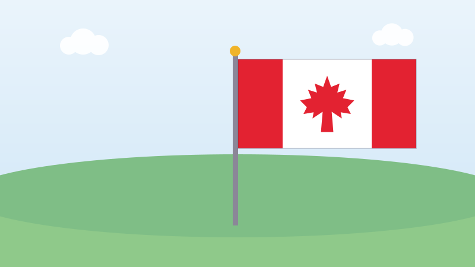

🍁 Pour les enfants
Six mois de dispute au sujet d'une feuille d'érable
Le Canada a près de 160 ans, mais le drapeau rouge et blanc est plus jeune que bien des grands-parents.

Pendant longtemps, le Canada a utilisé des drapeaux qui portaient le drapeau britannique dans un coin. Beaucoup de gens en voulaient un qui n'appartienne qu'au Canada. Beaucoup d'autres aimaient l'ancien et ne voulaient pas en changer.
En 1964, le gouvernement a demandé aux Canadiens d'envoyer leurs idées. Plusieurs milliers de dessins sont arrivés. Les gens ont envoyé des castors, des bâtons de hockey, des poissons, des étoiles et énormément de feuilles d'érable.
Un professeur d'histoire nommé George Stanley a eu une idée toute simple : deux bandes rouges, un carré blanc au milieu, et une feuille d'érable rouge dans le carré. L'idée lui est venue du drapeau du collège où il enseignait.
D'autres Canadiens l'ont achevé. Un artiste nommé Jacques St-Cyr a dessiné la feuille que nous connaissons, avec ses pointes nettes. Un homme nommé George Bist a calculé exactement la largeur et la hauteur du drapeau.
Puis les disputes ont commencé. Les députés ont débattu du drapeau de juin à décembre 1964. Ils ont prononcé des centaines de discours. Le vote final a eu lieu à deux heures et quart du matin.
Le 15 février 1965, le nouveau drapeau a été hissé pour la première fois sur la colline du Parlement, à Ottawa. Le Canada souligne ce jour chaque année comme le Jour du drapeau.
Essaie maintenant trois questions
Pas de chronomètre et aucune note à craindre. Chaque réponse t'explique pourquoi.
← Toutes les histoires pour enfants
À propos de ce quiz
Cette histoire raconte comment le Canada a choisi son drapeau : des milliers de dessins envoyés par des gens ordinaires, six mois de débats au Parlement, et une première montée du drapeau le 15 février 1965.
Elle est écrite en phrases courtes pour les enfants de six à neuf ans, avec une image dessinée pour ce site et trois questions à la fin. Touchez le bouton de lecture à voix haute et la page lira les questions à haute voix.